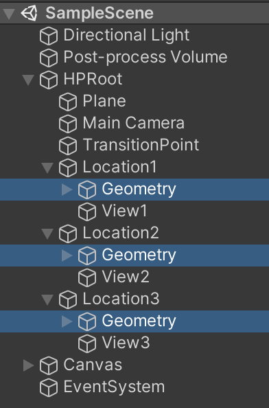
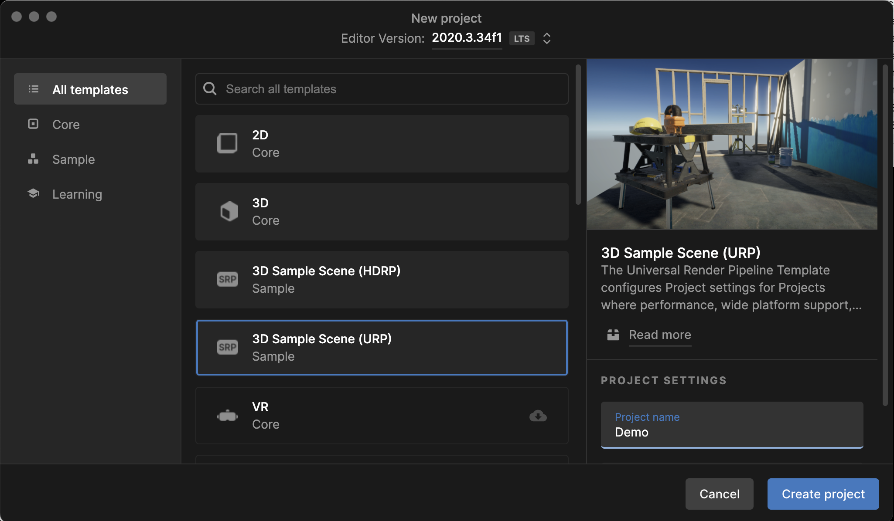
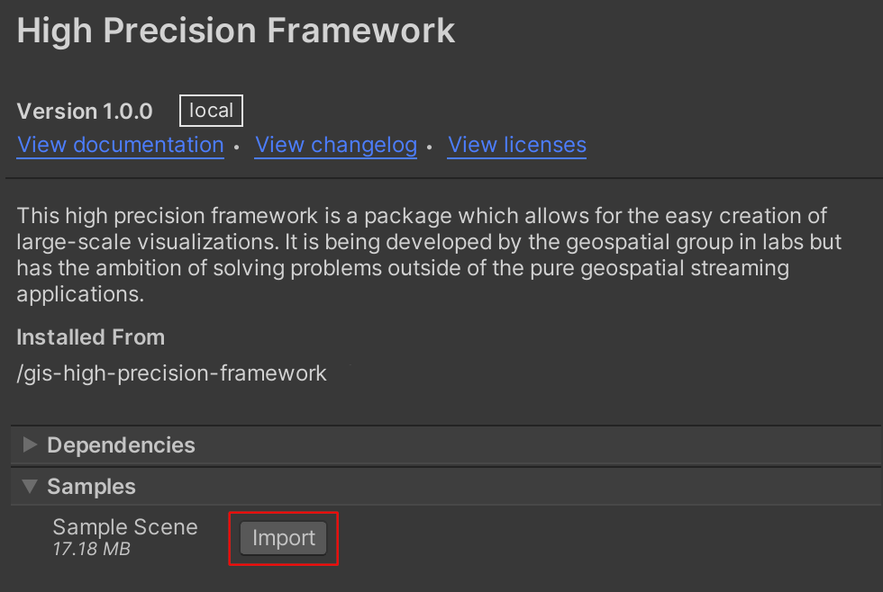
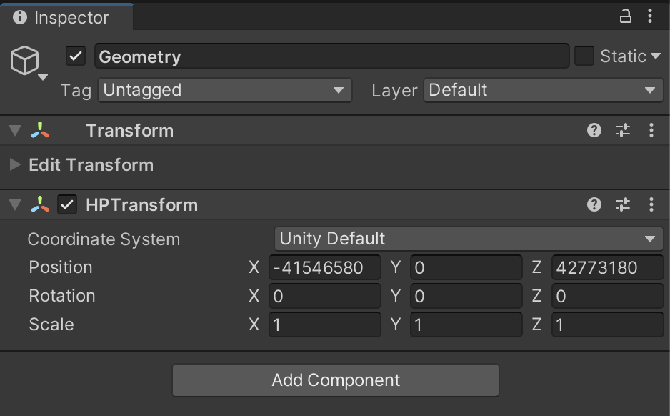

Try It With Our Sample Scene
This guide will show you how to position GameObjects within a hierarchy
using the high-precision framework.
We will be using a sample scene part of the High Precision Framework package. This scene is composed of 3 assets hierarchy positioned far from each other. These three assets are parented under a single HPRoot and replicate the same hierarchy. Each of them are located to different position via the HPTransform Component assigned to each Geometry object.

Location1 / Geometry is located close enough to the center of the world to be manipulated.
Location2 and Location3 are so far from the center, it is impossible to manipulate them within the editor. They are outside the floating point range and demonstrate how you can create world with greater range.
If you press play, you can easily transition from one location to an other via the buttons on the bottom left corner.
1 - Opening the Sample Scene
First, lets open the sample scene.
1.1 - Create a new URP Project
Within the Unity Hub, create a new project based on the URP template.

1.2 - Install the Package
Install the high-precision framework package using the installation instructions. Once you have completed these steps, you will have the high-precision framework installed in your current project.
1.3 - Import the Samples
In the package manager window (Window > Package Manager), select the
high-precision framework package by clicking on it. By expanding the
samples section, click on the import button.

1.4 - Open the Scene
Open the newly imported Sample Scene
Samples/High Precision Framework/v1.0.0/Sample Scene/Scenes/SampleScene
2 - Adding an Object to the Scene
Now that we have everything setup, lets learn how the high precision framework works.
2.1 - Create a Sphere
- Create a sphere (GameObject > 3D Object > Sphere).
- Change its parent by moving it under the HPRoot / Location2 / Geometry GameObject.
- Set its position to zero (X: 0, Y: 0, Z: 0)
2.2 - Display the result
Now, in the scene view, if you frame the sphere (F while the sphere is selected), you won't be able to see the geometry. The position of the parent is too far from the origin.
2.3 - Move the HPRoot
Instead of manually modifying the sphere position from the inspector on play mode, we will do it in the editor with the gizmo.
- In the Hierarchy view, select the HPRoot / Location2 / Geometry game object.
- In the Inspector, make sure the HPTransform Coordinate System is set to Unity Default.
- Take note of the position value in the HPTransform.
- In the Hierarchy view, select the HPRoot.
- In the Inspector, enter the same position value for the HPRoot (-41546580, 0, 42773180)

2.4 - Move the Sphere
Now, if you frame the sphere in the Editor view, you can position it by using the translation gizmo.
2.5 - Play
Reset the root position to zero and hit play. You can click on the buttons to switch between camera positions.